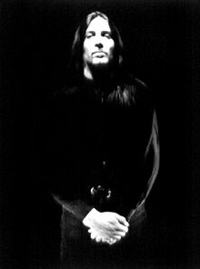
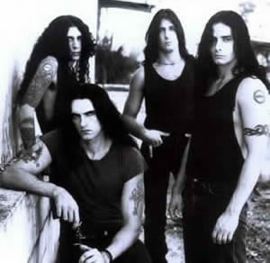

Entrevista
de Johnny Kelly à Denise MG - Vampirus Brasil - Janeiro
de 2003
Quanto tempo
você está tocando na banda Type O Negative,
até agora?
Estou na banda há 9 anos.
Como nós
sabemos, você costuma escrever o diário das turnês
do Type O Negative. Há quanto tempo você
está fazendo isso? Você tem algumas idéias
para letras de músicas também?
Eu tenho feito isso desde o início.
Eu ainda faço, mas nós temos tido muito o que
escrever a respeito, desde que demos um tempo com as turnês.
Eu nunca fui muito um compositor. Eu não acho que nunca
tenha escrito uma letra de música. Eu tenho muito medo
de ser ridicularizado.
Você
está em contato com os fãs ao redor do mundo?
Diga-nos algo sobre isso.
Eu tenho recebido e-mails de fãs
de todo o mundo desde que o site oficial surgiu. Eu acho ótimo
que existam fãs naqueles lugares ouvindo nossa música.
Você
tem irmãos ou irmãs que toquem em bandas de rock?
Há quanto tempo você vive no Brooklin - NY? Quando
foi sua primeira experiência tocando na banda?
Eu tenho um irmão, mas ele não
toca em nenhuma banda. Eu cresci no Brooklin. O primeiro show
que eu toquei foi em 1984 no Brooklin - NY.
Em julho,
1979 você viu seu primeiro show no Madison Square Garden,
KISS. Como este show mudou sua vida?
Eu estava completamente maluco por aquele
show. Era algo inédito para mim, até aquele momento.
Foi uma das coisas que me fez querer tocar bateria.
O que o Led
Zeppelin representa para você?
Eles foram a melhor banda que pisou no
planeta. Não existiu nada, musicalmente falando, que
eles não foram capazes de fazer. Eu ainda fico maravilhado
quando eu escuto as músicas deles. Eu ainda encontro
coisas que eu nunca havia ouvido antes.
Qual sua música
favorita ou cd do Type O Negative até agora?
Eu acho que World Coming Down
é o meu cd favorito. Eu sempre gostei de Pain
do primeiro cd também.
A maioria
dos nossos leitores simplesmente adoram os livros de Anne Rice.
Você gosta desse tipo de romance ou filmes? Vampiros?
Outras criaturas da noite?
Eu nunca li nenhum dos livros dela. Eu
vi o filme Entrevista com o Vampiro no cinema. Eu gostei.
Eu aprecio filmes de terror antigos.
Type O
Negative participou
de algumas trilhas sonoras. Nós estávamos esperando
ao menos uma música do Type na trilha do filme Rainha
dos Condenados também. Bem, como você se sente
com esse tipo de participação?
Eu realmente não tenho problemas
com isso, mas isso pode contribuir para a banda ser esteriotipada
e eu não quero que isso aconteça com a banda,
mais do que já tem acontecido. É sempre algo a
mais quando sua música é parte de alguma coisa
que é legal de alguma forma.
E sobre o
filme Nosferatu - o primeiro vampiro em branco e preto
com todas as músicas do Type O Negative? Como começou
essa idéia entre você, Josh, Peter e Kenny?
Nós não tivemos nenhuma
participação na idéia. A idéia foi
de outra pessoa. Os produtores do filme obtiveram os direitos
para as músicas. Nós não tínhamos
nada a fazer. Eu nem tenho uma cópia daquele filme.
Qual o nome
do novo cd que será lançado em março de
2003?
Até onde eu sei, o novo cd ainda
não tem um título, mas eu já li vários
títulos diferentes até agora.
O
aniversário da Sophia Paige Kelly, sua filha, é
em 19 de janeiro. Como você se sente como pai agora? Eu
creio que deva ser muito duro para você quando está
em turnê, longe dela e sua esposa...
Eu me sinto muito orgulhoso
quando eu vejo minha filha e constantemente me impressiono observando-a
crescer e desenvolver sua própria personalidade e identidade.
Não posso acreditar que ela já vai completar 2
anos nesta semana. É muito difícil para nós
quando eu fico fora de casa.
Quem está
quase sempre de bom humor na banda? Quem é o cara sério?
E você?
É duro encontrar um de nós
que esteja sempre de bom humor. Nem mesmo Kenny ou eu estamos
geralmente num melhor humor que o Josh e Peter. Na verdade,
eu tenho me sentido mais tranquilo, ultimamente.
Nós
recebemos algumas palavras suas sobre a ótima tour que
você terminou de fazer em 2002 com Glen Danzig e já
mostramos isso aos nossos leitores. Você gostaria de continuar
com essas turnês?
Fazer a turnê com Danzig foi "blast".
Eu me diverti muito e eu estou esperando ansiosamente para trabalhar
com a banda de novo, em breve.
Muitas raves
góticas, eventos, fashion shows são musicados
pelas músicas do Type O Negative, e existem
as bandas covers também. O que você acha disso?
Eu acho isso lisonjeante, claro.
Qual sua estação
do ano, favorita? Qual seu lugar favorito no mundo para se sentir
totalmente tranqüilo?
Outono é minha estação
favorita. Meu lugar favorito para relaxar é em minha
casa.
Johnny, a
pergunta mais difícil para mim é: Você tem
a intenção de deixar o Type O Negative?
Não tenho nenhuma intenção
de deixar o Type O Negative tão cedo.
Bem, muito
obrigada por todas suas palavras para nós do site Vampirus
Brasil, seus fãs eternos. Nós te desejamos boa
sorte, Johnny! Agora, há um espaço livre para
você. Diga tudo que quiser. Fique à vontade, Johnny!
Obrigado por seu tempo e agradeço
por sua ajuda em apoiar a banda. Eu espero que visitemos seu
país muito em breve. Feliz Ano Novo também. Cuide-se.
Extraída
de www.vampirusbrasil.com.br
Adaptada
por Spectrum